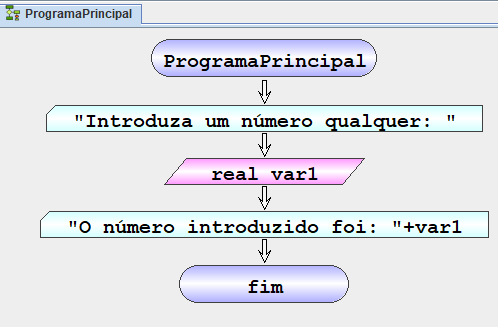
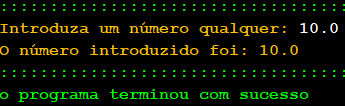

Ler
Lê uma ou mais variáveis definida na memória a partir da consola. A instrução também permite definir novas variáveis para a memória e cujo valor é inicializado pela consola. É também possível definir uma mensagem para ser apresentada quando o valor for pedido.| Símbolo Fluxograma | pseudocodigo pt-PT |
|---|---|
 |
Ler [<Tipo>] <var>[,<var> …] [<mensagem>] |
o Não pode ser uma palavra reservada
o Tem de começar por uma letra (a-z; A-Z)
o Pode conter dígitos (0-9)
o Deve ser significativo daquilo que armazena
• [<mensagem>] – mensagem a ser apresentada antes da leitura das variáveis [Opcional]
Exemplo – Ler variáveis
| Fluxograma pt-PT | Pseudocódigo pt-PT |
|---|---|
|  | inicio ProgramaPrincipal inicio ProgramaPrincipal escrever "Introduza um numero qualquer :" ler real var1 escrever "O numero introduzido foi : " + var1 fim ProgramaPrincipal |
| resultado |
|---|
|  |